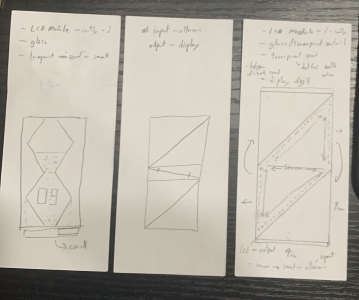

Stage 2
Planning
Next, I start doing sketches of how my hologram hourglass will look and list down the materials I need to make it real.
Sketches

Materials List
12x12 Led array that is made up of small led 3mm - To display the hologram timing.
Transparent sand / Sand - Ideally transparent sand so that the sand would not affect the hologram display.
Transparent plastic / acrylic - For the hologram display.
Transparent acrylic - For the outer cover of the whole setup and the hourglass, transparent so that the hologram display and sand could be seen.
Servo motor - Used to rotate the hourglass.
Ultrasonic sensor - Used to detect the direction of turning.
Arduino uno - Microcontroller to control the sensors.
Bill-of-Materials
| Cost |
Item |
Suppliers |
| $12 |
ACRY SHT 3MM 24X36IN CLEAR DIAMOND |
Art Friend |
| $6 |
KNR PRAND SAND 500ML 0.1-0.5MM CREAM |
Art Friend |
| $15 |
ARDUINO UNO |
Shoppee |
| $3 |
ULTRASONIC SENSOR |
Shoppee |
| $6 |
SERVO MOTOR |
Shoppee |
| $6 |
12X12 LED |
Sim Lim Tower |